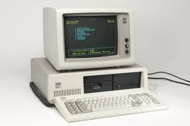
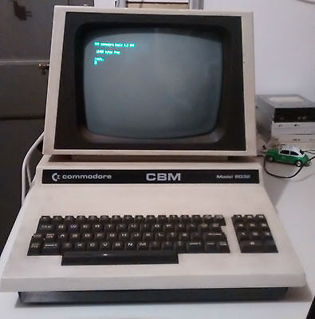
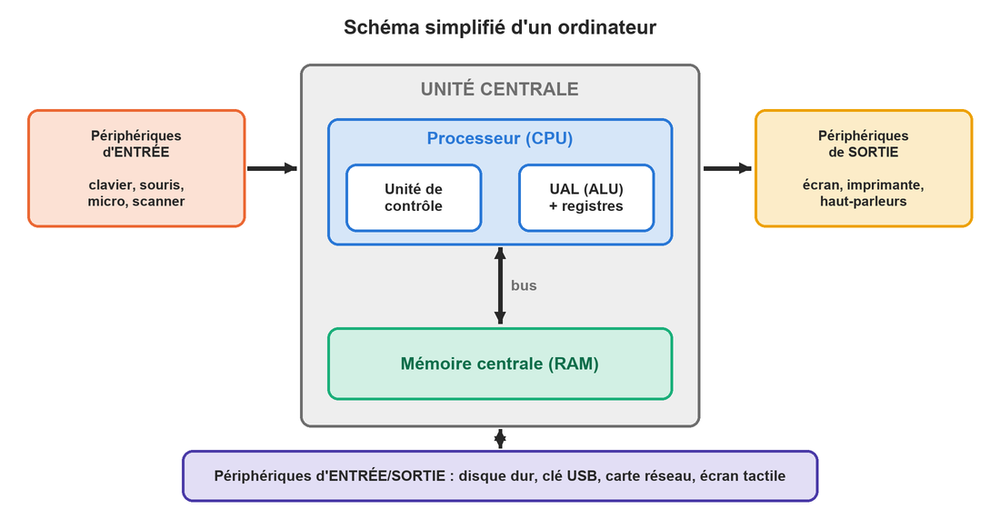

class: center, middle # L'architecture matérielle ## L'ordinateur et ses périphériques <p></p> --- ## Quelques questions de réflexion... * Quelle est la différence entre un « PC » et un Mac ? * Un smartphone est-il un ordinateur ? Et une console de jeux ? Et une voiture ? * La « tour » posée sous votre bureau, est-ce l'unité centrale ? * Votre scanner a une résolution de 600 dpi, mais le logiciel vous propose de scanner à 2400 dpi. Que va-t-il se passer ? * Pourquoi un ordinateur conçu pour le montage vidéo coûte-t-il plus cher qu'un ordinateur de bureautique ? --- ## « Plutôt Mac ou plutôt PC ? » .pull-left[ <br> <small>IBM PC/XT</small> ] .pull-right[ <p></p><br> <small>Commodore PET</small> ] <div style="clear: both;"></div> Utiliser le mot « PC » pour parler d'un ordinateur sous Windows est un **abus de langage**. PC signifie ***Personal Computer*** : un ordinateur destiné à l'usage d'**une seule personne**, assez petit pour tenir sur un bureau. Le sigle apparaît au début des années 1980 avec les ordinateurs d'**IBM**. Contrairement aux autres micro-ordinateurs de l'époque (Apple, Amiga, Commodore...), ils étaient assemblés à partir de **composants standards**, faciles à copier : c'est ce qui a fait leur succès... et celui de leurs nombreux « clones ». --- ## L'ordinateur sous toutes ses formes Aujourd'hui, l'ordinateur existe sous de nombreuses formes : * **ordinateur personnel** (PC) : de bureau ou portable ; * **serveur** et **mainframe** : de très gros ordinateurs qui rendent des services à de nombreux utilisateurs ; * **smartphone**, **tablette**, **console de jeux** ; * **ordinateur embarqué** : dans une voiture, un avion, une machine à laver... Le PC reste le type d'ordinateur le plus utilisé. Regroupés par milliers, des PC forment aussi : * les **datacenters** des moteurs de recherche et du *cloud* ; * les **fermes de rendu** (*render farms*) qui calculent les images des films d'animation. --- ## Schéma d'un ordinateur <div style="text-align: center;"> <p></p> </div> --- ## L'unité centrale L'**unité centrale** est le cœur de l'ordinateur. Elle est composée : * du **processeur** (CPU, *Central Processing Unit*), qui exécute les instructions des programmes ; * de la **mémoire centrale** (RAM), qui contient les programmes en cours d'exécution et leurs données ; * des **bus**, les « autoroutes » qui transportent les informations entre ces éléments (sur la **carte mère**). Tout ce qui est connecté à l'unité centrale est un **périphérique**. <span style="color: red;">Attention : la « tour » (le boîtier) n'est pas l'unité centrale ! Elle contient aussi des périphériques : le disque dur, le lecteur de cartes, la carte réseau...</span> --- ## Les périphériques Un **périphérique** est un dispositif matériel connecté à un système informatique, qui lui ajoute des fonctionnalités. Il n'appartient ni à la mémoire centrale ni à l'unité de traitement. On les classe en **trois groupes** : * les **périphériques d'entrée** fournissent des informations à l'ordinateur. Quelle que soit leur forme, ces informations sont traduites en un langage compréhensible par le système (en binaire !) ; * les **périphériques de sortie** font sortir de l'ordinateur les informations qu'il a traitées ; * les **périphériques d'entrée/sortie** stockent ou font transiter les informations entre l'ordinateur et l'environnement extérieur, dans les deux sens. --- ## À vous : entrée, sortie ou entrée/sortie ? .pull-left[ * Enceintes * Souris * Clé USB * Moniteur * Manette de jeu * Imprimante * Clavier * Box internet * Modem ] .pull-right[ * Disque dur externe * Volant de jeu * Tablette graphique * Tablette graphique avec écran * Écran tactile * Microphone * Webcam * Appareil photo ] --- ## Correction .small-table[ | Périphérique | Type | Périphérique | Type | |:---|:---:|:---|:---:| | Enceintes | S | Disque dur externe | E/S | | Souris | E | Volant de jeu | E (E/S s'il vibre) | | Clé USB | E/S | Tablette graphique | E | | Moniteur | S | Tablette graphique avec écran | E/S | | Manette de jeu | E (E/S si elle vibre) | Écran tactile | E/S | | Imprimante | S (E/S si multifonction) | Microphone | E | | Clavier | E | Webcam | E | | Box internet | E/S | Appareil photo | E | | Modem | E/S | | | ] Un **smartphone** n'est pas un périphérique : c'est un ordinateur à part entière ! Mais branché à un PC, il peut **jouer le rôle** d'un périphérique (stockage, webcam, partage de connexion). --- ## Choisir le bon périphérique Le choix d'un périphérique dépend directement du **travail final à produire**. Pour faire les bons choix, retenez **3 règles** : <ol style="font-size: 140%; margin: 40px 0 0 40px; line-height: 2;"> <li>« C'est étudié pour ! »</li> <li>« Seul le plus mauvais subsiste »</li> <li>« Juste ce qu'il faut, mais pas plus »</li> </ol> --- ## Règle 1 : « C'est étudié pour ! » Chaque périphérique est prévu pour un type particulier d'entrée ou de sortie. Il le fait **selon ses capacités** : ne lui demandez jamais de faire autre chose ! **Exemple 1** : un scanner a une résolution optique de **600 dpi** (600 points par pouce). Même si le logiciel vous propose de scanner à 2400 dpi, le scanner en est **physiquement incapable**. Il scannera à 600 dpi, et le logiciel **inventera** les points qu'il n'a pas vus. **Exemple 2** : vous devez remettre un plan à un client. Pour une sortie papier d'un dessin vectoriel, le **traceur** est l'outil adapté. Mais si le client doit retravailler le plan, il lui faut les **données numériques** : une clé USB sera alors le bon choix. --- ## Règle 2 : « Seul le plus mauvais subsiste » Votre travail passe par toute une **chaîne informatique** : <div style="text-align: center; font-size: 120%; margin: 20px 0;"> entrée → traitement → stockage / transfert → sortie </div> À chaque étape, si les données perdent en qualité ou en quantité, **elles ne pourront plus les retrouver** par la suite. C'est le maillon le plus faible qui fixe la qualité du résultat final. **Exemple** : un film est filmé avec une caméra ordinaire en 320 × 240 pixels. Les détails de la scène ne sont pas enregistrés... et ce n'est pas en agrandissant l'image qu'ils vont apparaître ! Pour obtenir des détails, il faut un **périphérique d'entrée** de meilleure résolution. <span style="color: red;">→ Une imprimante photo haut de gamme ne rattrapera jamais une photo floue.</span> --- ## Règle 3 : « Juste ce qu'il faut, mais pas plus » Dans l'ordinateur, **le temps est lié à l'espace** : plus un fichier est gros, plus il faut de temps pour le lire, le traiter, l'afficher, le sauvegarder, l'imprimer... Souvenez-vous du codage des images : en couleurs RVB, chaque pixel occupe **3 octets**. * Image de 320 × 240 pixels : 320 × 240 × 3 = 230 400 octets ≈ **230 Ko** ; * Photo 10 × 15 cm scannée à 300 dpi (≈ 1772 × 1181 pixels) : ≈ **6,3 Mo**, soit environ **27 fois plus**. Si un traitement prend 1 minute pour la petite image, il prendra environ une demi-heure pour la grande ! <span style="color: red;">Et si le fichier ne tient plus en mémoire vive, l'ordinateur doit utiliser le disque dur : tout devient encore beaucoup plus lent.</span> --- ## Petit rappel : le dpi **dpi** = *dots per inch* = points par pouce, avec **1 pouce = 2,54 cm**. **Exemple** : on scanne une photo de 10 × 15 cm à 300 dpi. * 10 cm = 10 / 2,54 ≈ 3,94 pouces → 3,94 × 300 ≈ **1181 pixels** * 15 cm = 15 / 2,54 ≈ 5,91 pouces → 5,91 × 300 ≈ **1772 pixels** * Taille du fichier non compressé : 1772 × 1181 × 3 octets ≈ **6,3 Mo** **Question** : que devient la taille du fichier si on scanne à 600 dpi ? --- ## Exercice de synthèse : le choix d'un PC Voici la configuration d'un ordinateur vendu pour le **graphisme**. Quelque chose pose problème : trouvez la faille et argumentez ! .small-table[ | Composant | Caractéristique | |:---|:---| | Processeur | Intel Core i7-6700, 4 cœurs, 8 Mo de cache, jusqu'à 4 GHz | | Système | Windows 10 Famille 64 bits | | Mémoire vive | 64 Go (8 × 8 Go) de DDR4 | | Stockage | HDD 2 To 7200 tr/min + SSD M.2 128 Go | | Carte graphique | NVIDIA GTX 960, 2 Go | | Carte mère | 4 emplacements DIMM (barrettes de RAM) | | Connectique | 6 × USB 3.0, 4 × USB 2.0, HDMI, DisplayPort, RJ-45 | ] --- ## Sources des images * https://fr.wikipedia.org/wiki/IBM_PC/XT * https://fr.wikipedia.org/wiki/Commodore_PET * Schéma : réalisation personnelle